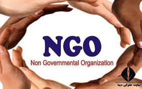
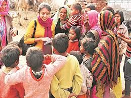
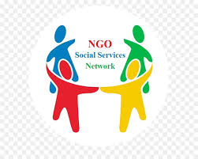

FAQ : What is an NGO?



Monetary gifts are tax-deductible and are often matched with other gifts from around the world to complete projects. We are managed by a board of directors with diverse backgrounds from all over the United States. Our president and founder, Ray West, spent much of his naval career as an aide and liaison working in Moldova and is uniquely qualified to carry out projects on the ground there. Ray spends 2-3 months every year in Moldova ensuring that these projects continue to move along according to plan. Board chairman Albert Gooch normally travels to Moldova twice each year to visit our projects.